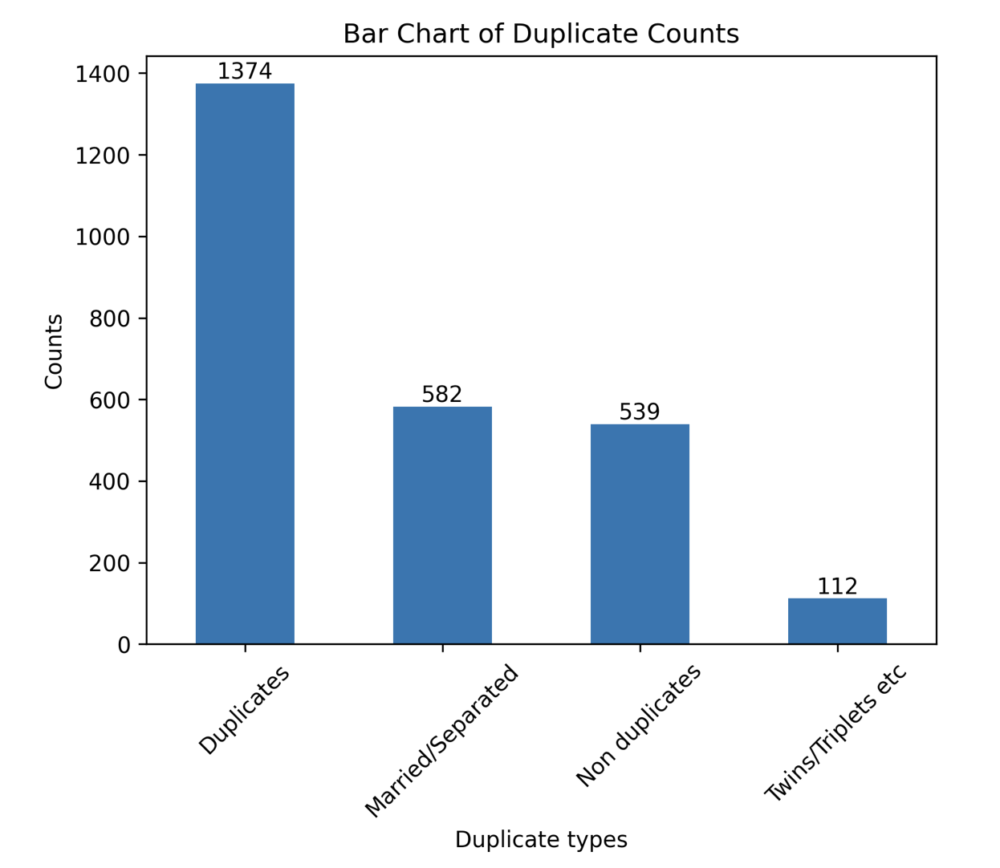

Large-scale entity resolution
Data Deduplication for NC Voter Registrations
Large-Scale Duplicate Detection and Entity Resolution
RootSquare develops advanced entity resolution systems designed to detect complex duplicate records at scale. Our technology identifies standard duplicates, name changes due to marriage or separation, and even distinguishes between twins and close family members with high precision.
To validate our approach in a real-world, large-scale environment, we applied it to the North Carolina Voter Registration Database, analyzing 6,455,829 active records. The system identified 2,607 potential duplicate pairs and classified them into four categories:
- Standard duplicates (same individual, multiple records)
- Marriage or separation-related changes
- Twin or multiple birth cases
- Non-duplicates
Each category was evaluated independently, achieving accuracy rates of 89%, 91%, 98%, and 96% respectively.
RootSquare.io's solution demonstrates unparalleled accuracy in identifying duplicates across diverse datasets. This analysis highlights the potential of our tools to streamline database management and improve data integrity.
The challenge in duplicate detection is not just finding similar records. It is distinguishing true duplicates from legitimate individuals who share overlapping attributes. Our system prioritizes precision to minimize false matches while reducing the need for manual review.
The impact of accurate entity resolution is significant. In healthcare organizations, duplicate rates average approximately 18%, according to Verato. Poor record integrity increases operational cost, clinical risk, and administrative burden.
RootSquare's solution enables:
- Reliable identity resolution
- Reduced manual reconciliation effort
- Lower operational risk
- Higher-quality data for analytics and decision-making
This project demonstrates our ability to operate at multi-million record scale while maintaining high accuracy across nuanced identity cases.

{kind=link}